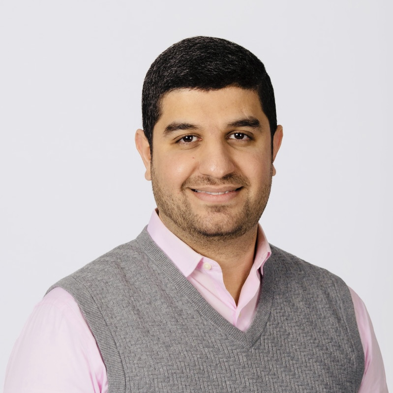

Samer Al-khateeb
|  |

|
About me
I am an assistant professor at the Department of Computer Science, Design, and Journalism (CSDJ), College of Arts and Sciences, at Creighton University. I earned my bachelor's degree in Computer Science from the University of Arkansas at Little Rock (UA-Little Rock). After graduating I found myself love teaching and doing research so I decided to finish my master's in Applied Science and then obtained my Ph.D. in Computer and Information Sciences from the same school. I am also a former Postdoctorate Research Fellow at the Collaboratorium for Social Media and Online Behavioral Studies (COSMOS) at UA-Little Rock. I study deviant acts (e.g., deviant cyber flash mobs, cyber propaganda campaigns, and fake news dissemination) on social media that are conducted by deviant groups (e.g., Daesh or ISIS, Black-hat hackers, and Propagandist) which aim to influence individual's behaviors and provoke hysteria among citizens. In addition to that, I study the type of actors these deviant groups use to perform their acts, i.e., are they human (e.g., internet trolls) or automated actors (e.g., social bots) by leveraging social science theories (e.g., the theory of collective action), social network analysis (e.g., centralities and community detection algorithms), and social cyber forensics (e.g., metadata collection to uncover the hidden relations among these actors across platforms).
I enjoy teaching and sharing the knowledge that I gained during my interdisciplinary studies. I believe people have a different level of knowledge as well as different academic backgrounds. This is where my interdisciplinary studies sometimes help. It enables me to explain concepts and theories to students with various academic backgrounds as I can relate some of these concepts to their field of study (when possible). One of the practices that I have found that is key to successfully conveying the material is to provide small and workable examples to the students. I believe students only learn by doing and this has motivated my teaching style. I also believe that teachers should adopt the paradigm of teaching that encourages building a community-like environment by building positive relationships between the teachers and the students. The community should encourage student participation and student collaboration in a cooperative context instead of a competitive context. I thoroughly enjoy teaching! I love to find new ways to explain topics so that everyone can understand.
Courses Taught at Creighton
- CSC 121: Computers and Scientific Thinking [FA18, SP19, FA19, SP20, FA20, SP21, FA21].
- CSC 221: Introduction to Programming [FA19, SP20, FA20, SP21].
- CSC 542: Database Design and Security [FA21].
- CSC 550: Introduction to Artificial Intelligence [SP20].
- CSC 551: Web Programming [FA18, FA19, FA20, FA21].
- CSC 590 (ST): Social Media & Cyber Forensics Analytics [SP19].
Research Interests
My research interests include the following topics:
- Mobs Analysis [Check CFMAnalyzer]
- Deviant Behavioral Modeling
- Deviant Cyber Flash Mobs (DCFMs)
- Cyber Propaganda Campaigns
- Social Cyber Forensics
- Social Computing
- Social Media Mining
- Cyber Collective Actions
- Social Bots Behaviours, Evolution, and Detection
- Toxicity and Sentiments Analysis